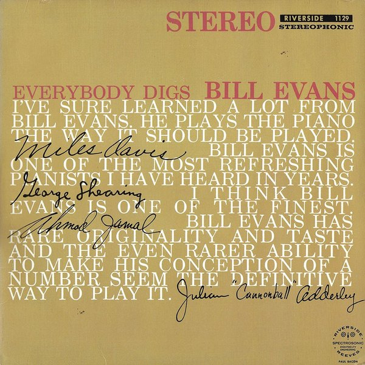
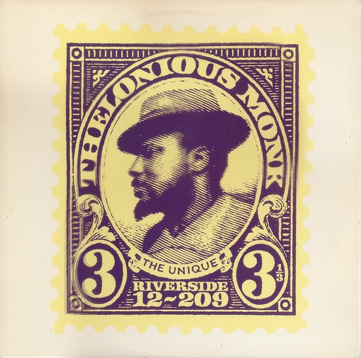

CRVI000143Kenny Drew - This Is New
Designed by Paul Bacon · 1957
Designed by Paul Bacon · 1957

CRVI001175Thelonious Monk - Thelonious Alone In San Francisco
Designed by Harris Lewine, Ken Braren, Paul Bacon, photograph by William Claxton · Riverside Records RLP 1158 · 1959
Designed by Harris Lewine, Ken Braren, Paul Bacon, photograph by William Claxton · Riverside Records RLP 1158 · 1959

CRVI001205Bill Evans Trio - Portrait In Jazz
Designed by Harris Lewine, Ken Braren, Paul Bacon, photograph by Melvin Sokolsky · Riverside Records RLP 12-315 · 1960
Designed by Harris Lewine, Ken Braren, Paul Bacon, photograph by Melvin Sokolsky · Riverside Records RLP 12-315 · 1960

CRVI001209Sonny Rollins - The Sound Of Sonny
Designed by Paul Bacon, photograph by Paul Weller · Riverside Records RLP 12-241 · 1957
Designed by Paul Bacon, photograph by Paul Weller · Riverside Records RLP 12-241 · 1957

CRVI001273Thelonious Monk - Genius Of Modern Music, Volume 1
Designed by Paul Bacon, photograph by Francis Wolff · Blue Note 5002 · 1951
Designed by Paul Bacon, photograph by Francis Wolff · Blue Note 5002 · 1951

CRVI001274Fats Navarro - Memorial Album
Designed by Paul Bacon · Blue Note 5004 · 1953
Designed by Paul Bacon · Blue Note 5004 · 1953

CRVI001275Howard McGhee - Howard McGhee
Designed by Paul Bacon · Blue Note 5012 · 1952
Designed by Paul Bacon · Blue Note 5012 · 1952

CRVI001375Thelonious Monk - Thelonious Himself
Designed by Paul Bacon, photograph by Paul Weller · Riverside 12-235 · 1957
Designed by Paul Bacon, photograph by Paul Weller · Riverside 12-235 · 1957

CRVI001376Max Roach - Deeds, Not Words
Designed by Paul Bacon, photograph by Lawrence N. Shustak · Riverside 12-280 · 1958
Designed by Paul Bacon, photograph by Lawrence N. Shustak · Riverside 12-280 · 1958

CRVI001415Paul Bacon, Ken Braren and Harris Lewine - Everybody Digs Bill Evans
Album cover · Riverside RLP 1129 · 1959
Album cover · Riverside RLP 1129 · 1959

CRVI001416Paul Bacon, Ken Braren and Harris Lewine - The Unique Thelonious Monk
Album cover · Riverside RLP 12-209 · 1958
Album cover · Riverside RLP 12-209 · 1958